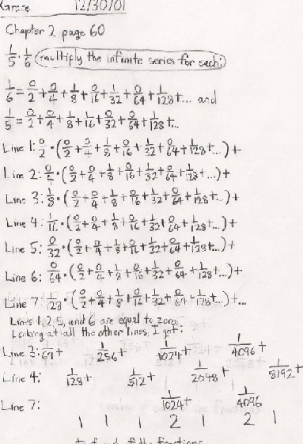
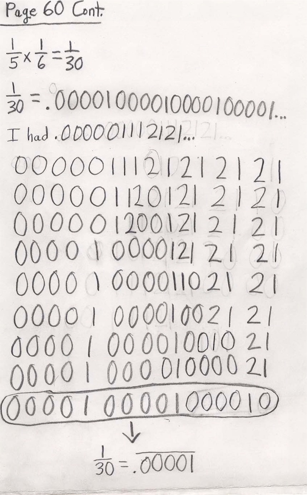

Grace multiplies two infinite series!
On Dec. 30, '01 Grace emailed Don with the attached files below:
Hi Don,
It was hard but I managed it.


See Grace's work on area under curves-> the integral.
See Grace's ideas about teaching!
See Grace's work on infinite series, cookie-sharing, graphing parabolas+.
To
other students who come from out of town to study with Don
To
other discoveries
To order
Don's materials
Mathman home